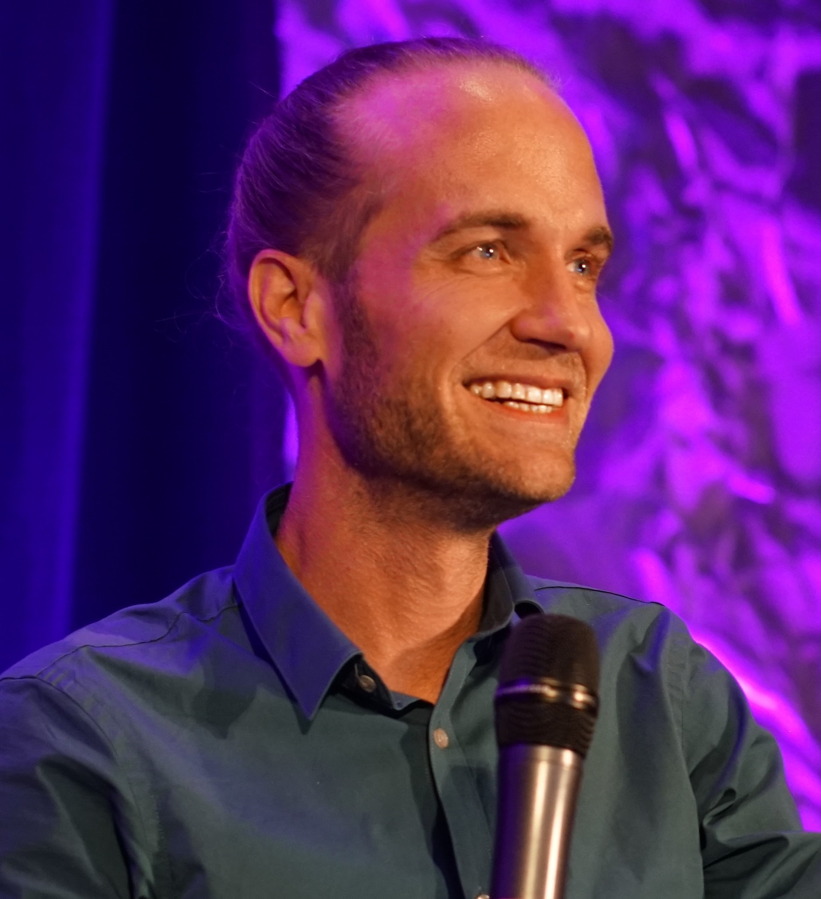

You need marketing leadership, without a full-time CMO.
Growth has outrun the marketing function. You need someone senior to set priorities, steer the team and report to the board on what marketing contributes.

Fractional CMO · AI Visibility Strategist · Author of The Future CMO
I help founders and leadership teams turn sharper positioning, strategic visibility and trust into measurable business value.
As a Fractional CMO, I bring senior marketing leadership without a full-time hire. I set the direction and stay involved in turning strategy into action.
Founder who built and sold a company Fractional CMO for growing companies, including Cloudalize and BioKissed Author of The Future CMO
Your book is the best update that I have read on the role and work of CMOs.
Philip Kotler, S.C. Johnson & Son Distinguished Professor of International Marketing, Kellogg School of Management
Growth has outrun the marketing function. You need someone senior to set priorities, steer the team and report to the board on what marketing contributes.
New markets, a broader offer, sharper competitors. The story buyers hear about you is still the one from three years ago.
Competitors are named in the answers. Your strongest work stays invisible to the people who would pay for it.
Most marketing teams can report what they published, how many people they reached and how many campaigns they ran. Fewer can say how the market sees the company, why customers trust it and what that is worth to the business.
I work on all three together.
Are you known for the right things?
Clear positioning and a story people remember, visible where buyers search, AI answers included.
Signalsconsideration, share of search, AI visibility
Why should a buyer believe you?
Proof, transparency and a customer experience that holds up, so buyers choose you and stay.
Signalsbuyer confidence, win rate, retention, referrals
What does marketing contribute?
Marketing priorities tied to the numbers your board already uses.
Signalsqualified pipeline, revenue contribution, acquisition efficiency, customer lifetime value
When one dimension lags, the others pay for it. Buyers who know you but do not yet believe you rarely become customers. Trust without visible results puts marketing budgets under pressure. Strong results with weak perception let competitors take the credit.
This is the thinking behind The Future CMO, and the reason the book argues for the CMO as Chief Value Officer.
Senior marketing leadership, part-time and accountable. I set direction with the leadership team, decide where the budget goes and align marketing with sales. I stay involved in making it happen: steering the team, working with agencies and specialists, and rolling up my sleeves where that moves things forward.
Joeri was hired as a fractional CMO to develop a B2B marketing strategy for attracting new leads. He put in place strong foundations across the marketing team.
Benny Willen, now CEO and Co-founder of Unflatten.io, on my Fractional CMO work at Cloudalize Recommendations on LinkedIn
The exact focus depends on where you start. Scope and rhythm are agreed in a first conversation.
For a specific question, or as a first step before a longer engagement:
AI Visibility Diagnostic. I test how AI systems such as ChatGPT, Perplexity, Claude and Google's AI answers describe and compare your company across the questions your buyers ask. I review the citations and public sources that appear in those answers and the trust signals that are missing. You leave with prioritised actions. AI systems do not reveal everything they draw on, so the diagnostic works with what can be observed: the answers, their citations and your public record.
We uncovered a number of quick wins for how I publish my podcast, structure data, and position my business in a way that makes sense for this new world of AI. Highly practical and highly recommended.
Matt Wilkinson, PhD, CEO, Strivenn Recommendations on LinkedIn
Strategy workshops for leadership and marketing teams.
Corporate AI training for marketing teams.
You're looking for someone to execute isolated marketing tasks without a broader strategy.
You want guaranteed AI rankings next month. Nobody controls what ChatGPT or Perplexity recommend. I work on the evidence they can find.
You want advice without making choices. The work pays off when the leadership team acts on it.
Before advising leadership teams, I founded BC Square, built it and sold it. I understand marketing decisions from both sides: as a strategist and as the person signing the cheques.
As a Fractional CMO I have built marketing strategies and led teams in growing companies, including Cloudalize and BioKissed. Hands-on where it counts, accountable for the result.
The Future CMO (2025), endorsed by Philip Kotler, on how marketing leadership is being rebuilt around trust, technology and accountability.
TEDxChiado, March 2026: Why Trust Is the Only Thing AI Cannot Scale.
More than 300 conversations with marketing leaders and founders on Web3 CMO Stories since 2022, ranked in the top 5% of podcasts globally by Listen Notes. Guests include Philip Kotler, Gary Vaynerchuk, Chris Do and Mark Schaefer. Nominated in three categories at the Belgian Podcast Awards 2025: Business, Smartest Podcast and Branded Podcast.
Dutch, French and English. Clients across Europe, North America and Asia.
Source: Benny Debruyne, “Gents techbedrijf Cloudalize haalt 2 miljoen dollar op en werkt nauw samen met Amerikaanse techreus Nvidia”, Trends, 12 October 2022, quoting CEO Benny Willen: “We sloten 2021 af met 400 procent omzetgroei.”
Joeri sets a clear direction and then trusts his team to deliver it. Leading a team spread across countries, he genuinely sought out our opinions and was never afraid to take a clear position.
Ayu Sutarga, former Head of Digital Marketing, BioKissed (my direct report) Recommendations on LinkedIn
I won 12 clients in only two months thanks to Joeri and his team. Highly recommended.
Yvan Van Campenhout, Founder, Altrimondi
Reach is rented. Trust compounds.
I speak on the future of marketing leadership, trust and AI visibility, for leadership teams and marketing conferences.
Book a keynoteGreat insights and very professional delivery.
Mark Schaefer, author of Marketing Rebellion
PodcastWeb3 CMO Stories, the podcast for marketing leaders and founders.
RetreatSintra Synergies, a curated marketing and AI retreat in Sintra for founders, CMOs and senior marketers.
A selection of recent essays on AI visibility, the changing role of the CMO and what marketing leadership looks like in AI-mediated markets.
Why marketing leadership is being reconstructed into a Chief Value Officer role, and why trust is the one thing AI cannot scale.
Read the pillarThe five layers that decide whether ChatGPT, Claude, Perplexity and Google's AI name your brand or a competitor.
Read the pillarReflections from a fireside chat with Mark Schaefer at the Sintra Synergies Retreat on cognitive surrender, brand override and why GEO alone won't save your brand.
Read articleA working definition of the disciplines shaping AI-era visibility, and why winning brands optimise for both human audiences and machine intelligence.
Read articleWhat preparing a TEDx talk reveals about clarity, messaging discipline and why strong ideas don't need to sell.
Read articleA 30-minute conversation about where your marketing stands and where it needs to go. We will both know by the end whether there is a fit.
Explore Sintra SynergiesJoeri Billast is a Belgian Fractional CMO, AI Visibility Strategist and author of The Future CMO (2025) and The 5K Challenge for Solopreneurs (2022). He is also a contributing author to The Most Amazing Marketing Book Ever by Mark Schaefer and The Content Entrepreneur by Joe Pulizzi. He is based in Sintra, near Lisbon, and advises founders and executive teams on marketing leadership and brand positioning in AI-driven markets. He hosts Web3 CMO Stories, the podcast on marketing in the next web, and speaks internationally on the intersection of marketing and artificial intelligence.
A Fractional CMO is a senior marketing leader who serves as Chief Marketing Officer for one or more companies on a part-time or interim basis. The role provides executive-level marketing strategy, leadership of internal marketing teams and accountability for growth, without the cost of a full-time hire. Fractional CMOs are typically engaged by founder-led companies, scale-ups and established businesses navigating a strategic transition.
AI Visibility Strategy is the work of making a brand discoverable, accurately described and cited by AI systems such as ChatGPT, Claude, Perplexity and Google's AI answers. It combines clear positioning, structured content and presence in the public sources those systems can draw on. Nobody can guarantee what an AI system recommends. The work strengthens the evidence it can find.
The Future CMO is a book by Joeri Billast on the role of marketing leadership in an era reshaped by artificial intelligence. It examines how Chief Marketing Officers must adapt strategy, brand positioning and decision-making to a market where AI mediates discovery, content and customer experience. The book is endorsed by Philip Kotler.
With a 30-minute conversation. If there is a fit, we agree either a Fractional CMO engagement scoped to your situation or a focused engagement first, such as an AI Visibility Diagnostic or a strategy workshop.